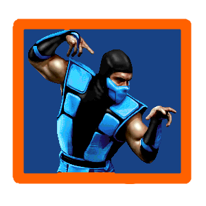
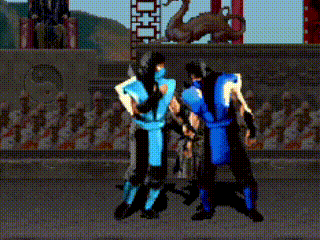
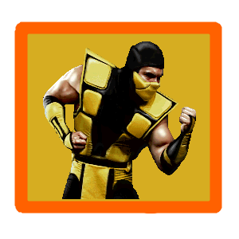
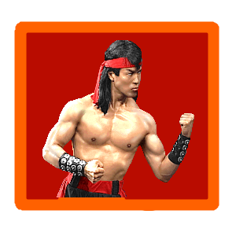
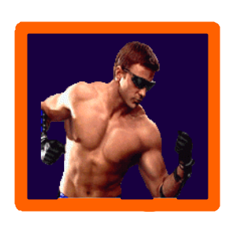
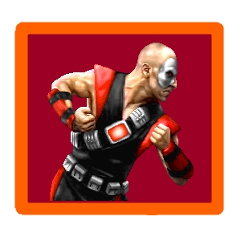
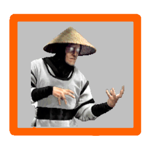
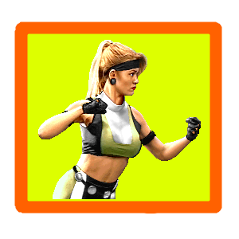

Mortal Kombat 1 Move list
To do the
Stage Fatality
You just do an Uppercut
(Down + High Punch)

SUB-ZERO
Special Moves:
Ice Freeze: Down, Forward, Low Punch
Slide: Hold Back + Low Punch + Low Kick + Block
Slide: Hold Back + Low Kick + High Kick - Sega Genesis
Finishing Moves:

Fatality:
Forward, Down, Forward, High Punch (close)

SCORPION
Special Moves:
Spear: Back, Back, Low Punch
Teleport: Down, Back, High Punch
Finishing Moves:
Fatality:
Hold Block and press Up, Up (Mid)

LIU KANG
Special Moves:
Fireball: Forward, Forward, High Punch
Flying Kick: Forward, Forward, High Kick
Finishing Moves:
Fatality:
Forward, Down, Back, Up (Repeat till its done)

JOHNNY CAGE
Special Moves:
Green Bolt: Back, Forward, Low Punch
Shadow Kick: Back, Forward, Low Kick
Ball Breaker: Block + Low Punch
Finishing Moves:
Fatality:
Forward, Forward, Forward, High Punch (close)

KANO
Special Moves:
Spin Attack: Forward, Down, Back, Up (repeat)
Knife Throw: Hold Block, Back, Forward
Finishing Moves:
Fatality:
Back, Down, Forward, Low Punch (close)
Back, Back, Back, Low Punch (close) - Sega Genesis

RAIDEN
Special Moves:
Teleport: Down, Up
Lightning: Down, Forward, Low Punch
Torpedo: Back, Back, Forward
Finishing Moves:
Fatality:
Forward, Back, Back, Back, High Punch (close)

SONYA BLADE
Special Moves:
Ring Toss: Low Punch, Back, Low Punch (Rev 5)
Ring Toss: Back, Low Punch, Back, Low Punch
Ring Toss: High Punch, Back, High Punch - Sega Genesis
Leg Grab: Down + Block + Low Punch + Low Kick
Square Flight: Forward, Back, High Punch
Finishing Moves:
Fatality:
Forward, Forward, Back, Back, Block